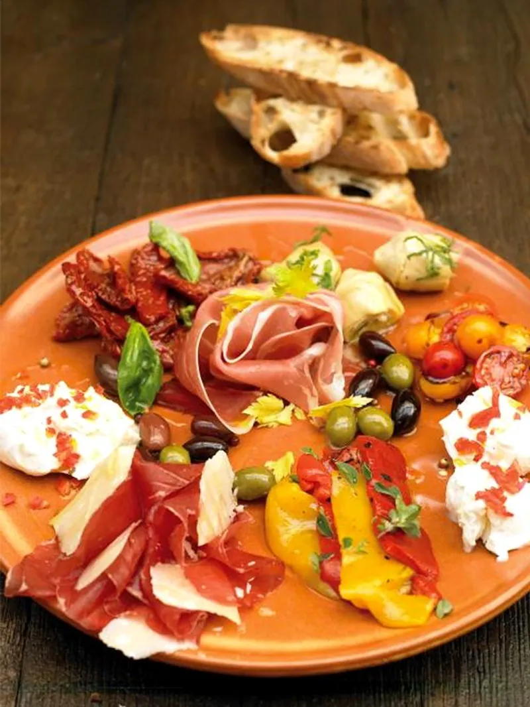

Antipasti platter

Description
Bring out this gorgeous antipasti plate before dinner and guests will be fighting over it.
Ingredients
- 2 x 150 g mozzarella balls , torn in half
- 1 red chilli , deseeded and finely chopped
- 20 slices quality prosciutto/bresaola/salami
- 280 g artichokes in olive oil , drained, oil reserved
- 290 g sundried tomatoes in olive oil , drained, oil
reserved
- 290 g balsamic sundried peppers in oil , drained, oil
reserved
- 3 tablespoons mixed olives
- 1 handful cherry tomatoes , halved
- Parmesan , for shaving
- 20 g fresh basil , leaves picked
- 1 loaf ciabatta bread , sliced
- 1 clove garlic , cut in half
Steps
- Place the mozzarella at the edges of a large plate and scatter with chilli. Arrange the cured meat and all the vegetables in small piles over the rest of the plate. Top the meat with some Parmesan.
- Put most of the basil leaves in a pestle and mortar or a Flavour Shaker with a pinch of salt and crush to a paste. Add a few tablespoons of the reserved olive oil from the jars and stir to make a basil-flavoured oil. Spoon it over the mozzarella and the vegetables, then drizzle with a little olive oil.
- Toast the ciabatta then rub lightly with the garlic, drizzle with a bit more of the reserved oil and serve everything together with the remaining basil leaves scattered over.
Index